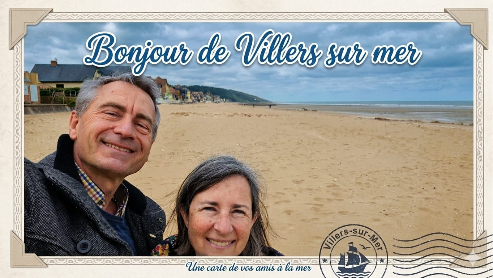

site de Kiki.Guytou.
Bienvenue sur notre site
Site perso, photos, photos montages , Intelligence artificielle

ParisAout 2026

Villers sur mer est située sur le littoral de la Manche, sur la Côte Fleurie, entre Deauville et Houlgate, à environ 45 km de Caen, 70 km du Havre, 100 km de Rouen, 200 km de Paris.
Villers-sur-Mer est également la commune française la plus septentrionale traversée par le méridien de Greenwich.
Rénové en 2016, ce dernier est matérialisé par une ligne bleue sur le parapet de la digue centrale juste après le casino et par un marquage au sol lumineux[1]. Cette ligne fictive est néanmoins décalée de 102,478 m vers l'ouest par rapport au méridien[2].
10ans de pratique
140reportages
6expositions
Garden Party à Igny le 31 Aout 2026
Une sélection de quelques photos.

01
A table

02
Manque une chaise

03
Alcoolique ?

04
C'est prêt

05
Commence à pleuvoir

06
Fait plus chaud à l'interieur

07
Y a des restes ?

08
Etoiles de neiges....

09
Pépère..!
Une sélection de quelques photos modifiées par IA

01
Les cousines

02
A Versailles

03
Les compères

04
Medaille d'or

05
Jimmy Henri...x

06
Christine et Sophie
Travaillons ensemble.
Pour une commande, une exposition ou simplement dire bonjour — j'y réponds toujours moi-même, en général sous deux jours.